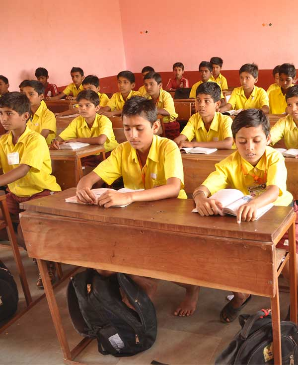

गुरूकुल
गुरूकुल ही भारतातील प्राचीन शिक्षण पद्धती असून भगवान राम व श्रीकृष्ण यांसारख्या अवतारांनीही गुरूकुलात राहून चारही आश्रमांची व आदर्श जीवनाची शिकवण घेतली, ज्यामुळे सुसंस्कारीत व आदर्श समाज निर्माण झाला. आज जरी पुस्तकी शिक्षण सर्वत्र उपलब्ध असले तरी चारही प्रकारचा विकास – शारीरिक, मानसिक, बौद्धिक व आध्यात्मिक – घडवणारी सुसंस्कारित शिक्षणव्यवस्था दुर्मिळ होत चालली आहे. याच उद्देशाने स्वामीजींनी निसर्गरम्य परिसरात गुरूकुल स्थापन करून पहिली ते दहावीपर्यंतचे विद्यार्थ्यांना संतांच्या सानिध्यात आधुनिक विज्ञानासोबत संस्कारमूलक शिक्षण देऊन सेवा, भक्ती, ज्ञान व विवेक असलेला आदर्श समाज घडवण्याचा प्रयत्न केला आहे. गुरूकुलात मुलांचे जीवन हे कुटुंबासारखेच असते, फक्त येथे कुटुंबाचे केंद्रस्थान गुरू आणि साधू-संत असतात. येथे विद्यार्थी एकत्र राहतात, खातात, अभ्यास करतात आणि सेवा, साधना व खेळ यांमधून शिकतात. गुरूकुलामध्ये केवळ पुस्तकातील धडे नव्हे तर वागणूक, बोलण्याची पद्धत, वेळेची कदर, स्वावलंबन आणि इतरांविषयी आदर ही मूल्ये रोजच्या व्यवहारातून मुलांच्या स्वभावात उतरवली जातात.
स्वामीजींनी स्थापन केलेले हे गुरूकुल भांगसी मातेंच्या पवित्र तीर्थक्षेत्राजवळील निसर्गरम्य परिसरात वसलेले आहे. हिरवीगार झाडे, स्वच्छ हवा, शांत वातावरण आणि देवस्थानाची दिव्य उपस्थिती यामुळे मुलांच्या मनावर सात्विक संस्कार होतात. शहरातील गोंगाटापासून दूर असलेला हा परिसर मुलांना अभ्यासासोबतच निसर्गाशी एकरूप होण्याची अनोखी संधी देतो.
या गुरूकुलात पहिली ते दहावीपर्यंतच्या विद्यार्थ्यांसाठी शालेय अभ्यासक्रमासोबतच संस्कारमूलक विषयांना देखील तितकेच महत्त्व दिले जाते. मराठी, हिंदी, इंग्रजी, गणित, विज्ञान, समाजशास्त्र यांसारख्या विषयांसोबत संस्कृत श्लोक, स्तोत्रे, योग, प्राणायाम, भजन-कीर्तन आणि कथाकथन यांचा समावेश करून अभ्यासक्रम सर्वांगीण बनवला आहे. मुलांना प्रश्न विचारायला, समजून घ्यायला आणि प्रत्यक्ष कृतीतून शिकायला प्रोत्साहन दिले जाते.

गुरूकुलातील एक खास वैशिष्ट्य म्हणजे येथील भव्य ध्यान मंदिर. येथे दररोज सकाळ-संध्याकाळ सामूहिक प्रार्थना, नामस्मरण आणि ध्यानसाधना केली जाते. या माध्यमातून मुलांचे मन शांत राहते, एकाग्रता वाढते आणि त्यांच्यातील भीती, राग, अहंकार हळूहळू कमी होऊ लागतो. साधू-संतांच्या वाणीतील कथा, गीता-उपनिषदांतील विचार आणि आदर्श व्यक्तिमत्त्वांच्या गोष्टी यांमधून मुलांना योग्य दिशा मिळते.
शारीरिक विकासासाठी प्रशस्त खेळाचे मैदान, व्यायामासाठी आवश्यक साधने आणि विविध क्रीडा प्रकारांची मोकळी संधी उपलब्ध करून देण्यात आलेली आहे. सकस व पौष्टिक जेवण, वेळेवर विश्रांती आणि नियमित व्यायाम यामुळे मुलांचे आरोग्य सक्षम व तंदुरुस्त राहते. मुलांना शेती, वृक्षलागवड, स्वच्छता आणि परिसर सौंदर्यीकरणाच्या उपक्रमांमध्ये प्रत्यक्ष सहभागी करून पर्यावरणप्रेम आणि श्रमसंस्कारही जोपासले जातात.
बौद्धिक विकासासाठी गुरूकुलात अनुभवी व उच्च शिक्षित गुरुजनांची नियुक्ती करण्यात आलेली आहे. प्रत्येक विद्यार्थ्याकडे वैयक्तिक लक्ष देऊन त्याची क्षमता ओळखण्याचा प्रयत्न केला जातो. शंका निरसन, गटचर्चा, प्रयोग, प्रात्यक्षिके आणि प्रकल्प यांच्या माध्यमातून मुलांचा आत्मविश्वास वाढवला जातो. येथे गुणपत्रिका ही फक्त गुणांची नोंद नसून मुलाच्या स्वभाव, वर्तन, सेवा आणि सहभाग यांचा एकत्रित आढावा असतो.
आध्यात्मिक आणि नैतिक शिक्षणासाठी गीता, रामायण, जीवनचरित्रे आणि संतवाङ्मय यांवर आधारित विशेष वर्ग घेतले जातात. "आई-वडील, गुरू, देश आणि निसर्ग यांचे ऋण कधी फेडता येत नाही, पण त्यांची सेवा करून ते ऋण कमी करण्याचा प्रामाणिक प्रयत्न करावा" हा धडा मुलांच्या मनात रूजवला जातो. त्यामुळे विद्यार्थी मोठे झाल्यावर केवळ स्वतःसाठी नव्हे, तर कुटुंब, समाज आणि राष्ट्रासाठी काहीतरी करण्याची प्रेरणा घेऊन बाहेर पडतात.
स्वामीजींच्या या गुरूकुलातून बाहेर पडणारे विद्यार्थी केवळ सुशिक्षित नव्हेत, तर सुसंस्कारित, सेवाभावी, प्रामाणिक आणि राष्ट्रनिष्ठ नागरिक बनावेत हीच येथील मुख्य भावना आहे. भविष्यात असा सेवाभावी, भक्तिश्रद्धाळू, ज्ञानी व विवेकी समाज घडवण्याचे स्वप्न या गुरूकुलाच्या माध्यमातून सत्यात उतरावे, यासाठी साधू-संत, पालक आणि समाज सर्वजण एकत्रितपणे प्रयत्नशील आहेत.